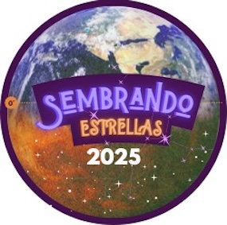

Sembrando Estrellas

Encuentros para estudiantes de colegio y primeros años de universidad, con charlas, testimonios y conversaciones honestas sobre ciencia, trayectorias profesionales, dudas, desafíos y oportunidades.
Conocer el proyecto →